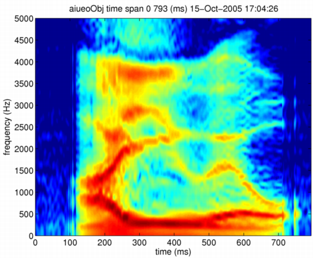
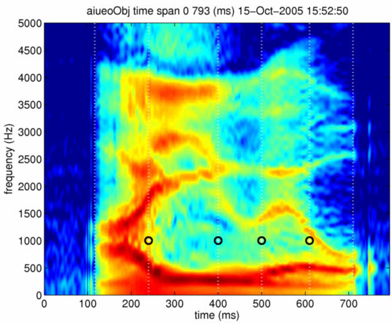
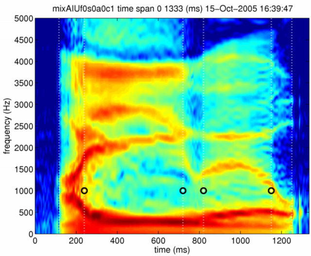

| | Duration control of segments | Contents | Index |
A Japanese vowel sequence /aiueo/ is used as an example here. The first step is to create a morphing object as in the previous sections.
[x,fs]=wavread('../STRAIGHTV40_003b/vaiueo2d.wav');
aiueoObj = createMobject
aiueoObj = updateFieldOfMobject(aiueoObj,'waveform',x);
aiueoObj = updateFieldOfMobject(aiueoObj,'samplingFrequency',fs);
Let's inspect its STRAIGHT spectrogram. The following commands calculate and display the STRAIGHT spectrogram of the vowel sequence.
aiueoObj = executeSTRAIGHTanalysisM(aiueoObj); displayMobject(aiueoObj,'anchorFrequency','aiueoObj'); axis([0 794 0 5000])

It is straightforward to use it to define segments when a phonemic labeling of this vowel sequence is available. Let's put segment boundaries by visually inspecting the STRAIGHT spectrogram here. It may be reasonable to set segment boundaries at the following locations; 116, 240, 400, 500, 610, 710 ms. Please set frequency anchoring points to 1000Hz for every temporal anchoring points because duration is the only attribute we are interested.
rawanch =[116 -10;240 1000;400 1000;500 1000;610 1000;710 -10];
The negative frequency values at 116 ms and 710 ms were set to indicate that they are voicing boundaries. The following commands set the anchoring information to the morphing object under study. The following commands also display the anchoring points with the STRAIGHT spectrogram.
aiueoObj = setAnchorFromRawAnchor(aiueoObj,rawanch) displayMobject(aiueoObj,'anchorFrequency','aiueoObj'); axis([0 794 0 5000])

Segment durations are calculated by differentiating temporal locations of the anchoring points.
>> diff(aiueoObj.anchorTimeLocation)' ans = 124 160 100 110 100
As a manipulation example, let's make a synthetic speech that has three times longer /i/ and /e/ segments, the second and the fourth segment. It is necessary to make a dummy morphing object that has desired segment durations. The following commands do it.
modaiueoObj = aiueoObj; modaiueoObj.anchorTimeLocation = cumsum([116;124 ; 160*3 ; 100 ; 110*3; 100]);
It is necessary to adjust internal target objects' size to be consistent with the modified temporal information. The function fixDummyObjectSize does it.
modaiueoObj = fixDummyObjectSize(modaiueoObj,aiueoObj);
It will be useful to write a function to do this sequence of commands in a single action including creation of the dummy object and manipulation of durations.
The next step is to define a structured variable to set the partial morphing rates. Only the 'coordinate' field has to be set one and other fields have to be set zero, because duration (time axis of the time-frequency coordinate) is the attribute to be manipulated. The following commands set morphing rates to the fields of a variable mRate.
mRate.F0 =0; mRate.aperiodicity=0; mRate.spectrum=0; mRate.coordinate=1;
The following commands do necessary morphing to do the duration control. The manipulated morphing object is also displayed.
mixAIUf0s0a0c1 = timeFrequencySTRAIGHTmorphing(aiueoObj,modaiueoObj,mRate,'log'); displayMobject(mixAIUf0s0a0c1,'anchorFrequency','mixAIUf0s0a0c1'); axis([0 1334 0 5000])

The manipulated spectrogram clearly shows that the second and the fourth segments are dilated in time. The following command generates a synthetic speech from this manipulated morphing object.
syAIUmixf0s0a0c1 = executeSTRAIGHTsynthesisM(mixAIUf0s0a0c1);
The original and the manipulated speech sounds are linked below. Please check how it sounds. It is interesting to find the fourth segment does not sound dilated three times in time (at least for a native Japanese listener, me.....).
| | Duration control of segments | Contents | Index |